Instructions
General#
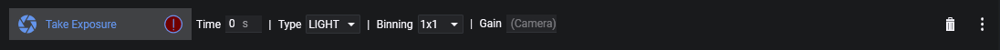
An instruction is a single command that the application will execute. Each instruction has a different purpose and can control various types of equipment, set parameters or are utility functions to automate the imaging process.
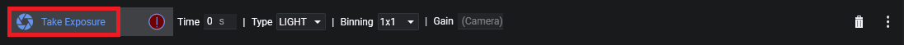
Each instruction can be identified by its name and its icon.
Validations#
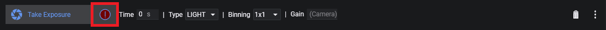
Instructions are capable of validating prerequisites and warn the user about potential issues. When a red exclamation mark is visible next to the instructions, not all prerequisites to run this instruction are met and when hovering over the red circle, the details which prerequisites are missing is shown.
Important: An instruction that does not meet its prerequisites will be skipped and the instruction is considered as failed.
Options#
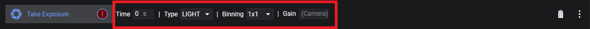
Most instructions also come with a variety of options to adjust their behavior at runtime. For example you can adjust the exposure times, gain and offset for an instruction that should take an exposure with your camera. Each instruction has a different set of options which are explained in more detail below.
Buttons#
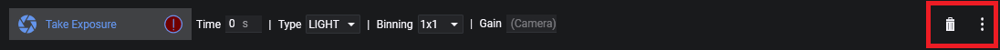
On the right side of the instructions are a bunch of buttons available to delete, copy, move or adjust advanced settings that exist for all instructions.
Advanced settings#
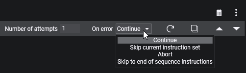
When clicking on the three dots on the right side of an instruction, an advanced section will appear where advanced settings for an instruction are revealed.
Number of attempts
This drives how many reattempts an instruction should make in case of failure
On error
When all attempts have been unsuccessful this setting will drive how to continue with the sequence.
- Continue: The sequencer will just continue with the next instruction
- Skip current instruction set: The currently running instruction set will be skipped
- Abort: The sequence will be completely stopped
- Skip to end of sequence instructions: Skip any remaining instructions from the start and target area and continue with the instructions in the sequence end area
Reset
This button will reset the state of the instruction, like progress exposures etc.
Copy
Create an exact copy of the current instruction set and add it below the current instruction
Move up
Moves the instruction one row above. If it is already the first instruction of an instruction set, it will move to the parent instruction set above the current instruction set instead.
If the previous instruction is an instruction set that is not collapsed, the instruction will move to the bottom of that instruction set
Move down
Moves the instruction one row below. If it is already the last instruction of an instruction set, it will move to the parent instruction set below the current instruction set instead.
If the next instruction is an instruction set that is not collapsed, the instruction will move to the top of that instruction set
Camera#
Control basic functions of a Camera. Each instruction in this category requires at least a Camera to be connected.
Cool Camera#
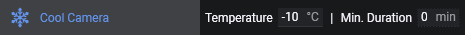
Cool your camera to the specified temperature and the specified minimum duration. For most cameras the duration can be left at 0 as the driver will handle the cooling duration. Once the camera has reached the specified temperature the instruction is completed.
Requires a camera that is capable of set point cooling
Warm Camera#
Warm your camera to ambient temperature using the specified minimum duration. For most cameras the duration can be left at 0 as the driver will handle the cooling duration.
Once the camera has reached the ambient temperature the cooler is turned off and the instruction is completed.
Requires a camera that is capable of set point cooling
Dew Heater#
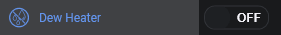
This instruction will turn on or turn off the camera dew heater
Requires a camera that has a controllable dew heater
Set Readout Mode#
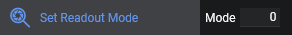
Set your camera to a specific readout mode. The number indicates the index of the readout mode from the camera dropdown - starting with 0.
Requires a camera with settable readout modes
Take Exposure#
This instruction will take an exposure using the specified exposure time, binning, gain and offset.
Take Many Exposures#
Similar to the "Take Exposure" instruction, but with the added ability to specify a number of exposures to complete before proceeding.
Take Subframe Exposure#
Similar to the "Take Exposure" instruction, but with the added ability to specify a subframe percentage relative to the center.
Smart Exposure#
Similar to the "Take Many Exposure" instruction, but with the added ability to also specify a specific filter and to dither after a specific amount of exposures.
Keep dither after exposures to 0, to skip the dither completely.
Requires a connected filter wheel to switch filters and a connected guider to dither
Note
A fun fact - the "Take Many Exposures" and "Smart Exposures" are actually instruction sets with static content that is just displayed like a normal instruction and is bundling together most common imaging operations for convenience
Dome#
Control basic functions of a Dome. Each instruction in this category requires at least a Dome to be connected.
Close Dome Shutter#
Closes the dome shutter
Requires a controllable dome shutter
Enable Dome Sync#
Enables the automatic background synchronization of the telescope and the dome
Requires a telescope to be connected
Disable Dome Sync#
Disables the automatic background synchronization of the telescope and the dome
Requires a telescope to be connected
Open Dome Shutter#
Opens the dome shutter
Requires a controllable dome shutter
Park Dome#
Parks the dome to its specified home position
Requires a dome driver that is capable of parking
Slew Dome Azimuth#
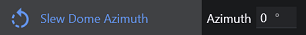
Slews the dome to a specific azimuth position
Requires a dome driver that is capable of setting azimuth
Synchronize Dome#
Synchronizes the dome to the current telescope position
Filter Wheel#
Control basic functions of a Filter Wheel. Each instruction in this category requires at least a Filter Wheel to be connected.
Switch Filter#
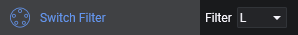
Switches the filter wheel filter to the specified filter. Like all filter wheel changes the focuser offset will be applied, when available.
Flat Panel#
Control basic functions of a Flat Panel. Each instruction in this category requires at least a Flat Panel to be connected.
Close Flat Panel Cover#
Closes the flat panel
Requires a flat panel that can open and close itself
Open Flat Panel Cover#
Opens the flat panel
Requires a flat panel that can open and close itself
Set Brightness#
Sets the brightness of the panel to the specified value. (Does not turn on the panel automatically).
Toggle Light#
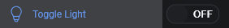
Turns the flat panel light on or off depending on the setting
Trained Flat Exposure#
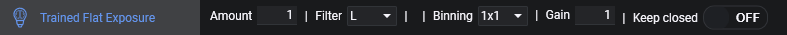
This instruction will look up the trained flat exposures according to the specified filter, exposure time, gain and offset, close the flat panel (if available), set the flat panel brightness, turn it on, take the flat frames for the given amount, turns off the flat panel and finally opens the cover again (if available and if "keep closed" is off)
Requires a camera to be connected and trained flat values being set in the flat panel tab that match the values in the instruction
Trained Dark Exposure#
This instruction will look up the trained flat exposures according to the specified filter, exposure time, gain and offset, close the flat panel (if available), turn it off, take the dark frames for the given amount and finally opens the cover again (if available and if "keep closed" is off)
Requires a camera to be connected and trained flat values being set in the flat panel tab that match the values in the instruction
Focuser#
Control basic functions of a Focuser. Each instruction in this category requires at least a Focuser to be connected.
Move Focuser#
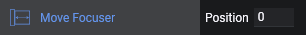
Moves the focuser to the specified absolute position
Move Focuser By Temp.#
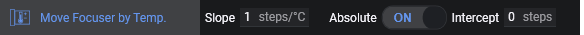
Moves the focuser to a position that is based on the temperature reported by the focuser. This can be used to "follow" the point of best focus in its temperature dependency.
The dependency is modeled with a simple linear model. This can work in two ways:
- Absolute mode: New focus position = Slope * Current Temperature + Intercept
- Relative mode: New focus position = Current focus position + Slope * (Current Temperature - Temperature at last focuser movement)
When used in relative mode, if the focus position change is less than one step, the focuser doesn't actually move, but the fractional part is carried over for the next time the Move Focuser By Temp. element is executed, so that even very gradual temperature shifts are not lost due to rounding errors.
Requires a focuser with a temperature probe
Note
To determine the slope and intercept, you can use the history of your autofocus runs and run a linear regression on these best focus points. The intercept will be the the cross of the y-axis at 0°C and the slope will be the temperature gradient.
For the best fit try to only use autofocus points from a single session and make sure the telescope is cooled down fully.
The plugin Autofocus Report Analysis can help you in determining these parameters, but be careful to have good data points with a good fit, otherwise these values will be error prone.
Move Focuser Relative#
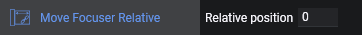
Moves the focuser to a target position based on the current position and a specified amount from that position
Run Autofocus#
Starts an autofocus run based on the autofocus settings
Guider#
Control basic functions of a Guider. Each instruction in this category requires at least a Guider to be connected.
Dither#
Issues the guider to dither
Start Guiding#
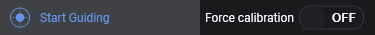
Starts guiding if not already started. In addition a toggle to force the calibration can be enabled. Then the guider will be forced to run a calibration, even if a valid calibration is already available. When this toggle is off, the guider will determine by itself if calibration is necessary.
Stop Guiding#
Stops active guiding when guiding is active.
Rotator#
Control basic functions of a Rotator. Each instruction in this category requires at least a Rotator to be connected.
Rotate By Mechanical Angle#
Rotates the rotator to the specified mechanical absolute angle
Solve and Rotate#
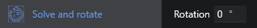
Takes an image from the current position the telescope is pointing at, platesolves it and moves the rotator to the specified sky angle. It will repeat until the rotator is within the rotation tolerance.
This instruction will not move the mount, it will just sync and move the rotator to the target sky angle!
Safety Monitor#
Control basic functions of a safety monitor. Each instruction in this category requires at least a safety monitor to be connected.
Wait Until Safe#
Waits until the safety monitor is reporting safe conditions again
Switch#
Control basic functions of a Switch. Each instruction in this category requires at least a Switch to be connected.
Set Switch Value#
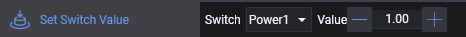
Sets a switch to a specified value. When no switch is connected, a list of generic switches by number are available. The list will update itself to the actual switches on device connection. When a specified switch value is out of range, the instruction will show a validation error.
Telescope#
Control basic functions of a Telescope. Each instruction in this category requires at least a Telescope to be connected.
Find Home#
Move the mount to the home position.
Requires a mount driver that is capable of finding the home position
Park Scope#
Moves the mount to the park position. A mount that is parked, will not accept slew commands.
Requires a mount driver that is capable of parking
Set Tracking#
Enables mount tracking to the specified tracking rate.
Slew And Center#
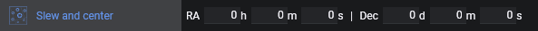
Stops Guiding (if it was active), slews to the specified coordinates, calls the platesolver to center to the specified coordinates and resumes guiding (if it was stopped at the start).
When this instruction is part of a "Deep Sky Object Sequence" the coordinates will be inherited and no coordinates need to be entered here
Requires a plate solver to be set up
Slew To Alt/Az#
Slews to the specified coordinates.
Slew To Ra/Dec#
Stops Guiding (if it was active), slews to the specified coordinates and resumes guiding (if it was stopped at the start).
When this instruction is part of a "Deep Sky Object Sequence" the coordinates will be inherited and no coordinates need to be entered here
Slew, Center And Rotate#
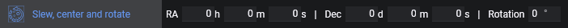
Stops Guiding (if it was active), slews to the specified coordinates, calls the platesolver to center to the specified coordinates as well as considering the rotation together with a rotator and resumes guiding (if it was stopped at the start).
When this instruction is part of a "Deep Sky Object Sequence" the coordinates will be inherited and no coordinates need to be entered here
Requires a plate solver to be set up and a rotator to be connected
Solve And Sync#
Uses the current mount position to solve the position and sync it based on the plate solver result.
This instruction will not center the mount, it will just sync the mount to where it is currently pointing at!
Requires a plate solver to be set up
Unpark Scope#
Unparks the mount so it is able to receive slew commands.
Requires a mount driver that is capable of parking
Utility#
The instructions in this category are utility commands that don't necessarily depend on any equipment and have useful tools and helpers to improve the sequence
Annotation#
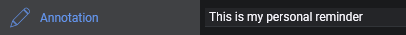
This instruction will not execute anything. It is purely there to have custom text annotations inside the sequence to remind you of things, or taking notes to clarify certain sequence arrangements etc.
External Script#
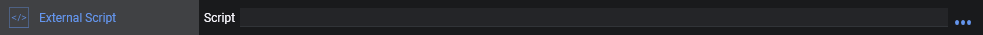
An instruction to start a custom executable file from your file system. Click on the three dots to browse through the file explorer and set a file path.
Message Box#
When this instruction is starting it will spawn a message box and pauses the sequence until the user action to confirm the box is taken. The box can be used for example to stop the sequence and notify you to put a cover on to take flats etc.
Wait For Altitude#
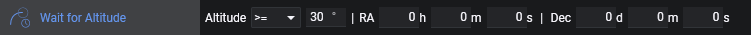
For the given target coordinates, this instruction will simply wait until the altitude has been reached. When this instruction is part of a "Deep Sky Object Sequence" the coordinates will be inherited and no coordinates need to be entered here
Wait For Time#
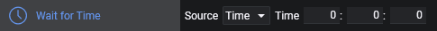
Wait until a specific point in time. The time can either be set manually or automatically determined based on criteria as well as an offset specified in minutes.
Time: Manually entered time
Sunset: The time when the sun gets below 0° of the horizon
Civil Dusk: The time when the sun gets below 6° of the horizon
Nautical Dusk: The time when the sun gets below 12° of the horizon
Astronomical Dusk: The time when the sun gets below 18° of the horizon
Astronomical Dawn: The time when the sun gets above 18° of the horizon
Nautical Dawn: The time when the sun gets above 12° of the horizon
Civil Dawn: The time when the sun gets above 6° of the horizon
Sunrise: The time when the sun gets above 0° of the horizon
Meridian: When a target is set this will be the time the target will cross the meridian
| Time source | Rollover time |
|---|---|
| Time | Sunrise |
| Sunset | Sunrise |
| Civil Dusk | Sunrise |
| Nautical Dusk | Sunrise |
| Astronomical Dusk | Sunrise |
| Astronomical Dawn | Sunset |
| Nautical Dawn | Sunset |
| Civil Dawn | Sunset |
| Sunrise | Sunset |
| Meridian | Meridian + 12 |
Note
When using a manual time:
As there is no day attached to the instruction, the roll over for a new day happens at noon (similar to the altitude charts). This brings a few advantages to not wait unexpectedly when you are already past the specified time.
Examples:
Sunrise is at 09:00h
Current time: 18:00h | Wait for time: 19:00h -> Wait for one hour
Current time: 20:00h | Wait for time: 19:00h -> Instruction will be skipped
Current time: 18:00h | Wait for time: 02:00h -> Wait for eight hours
Current time: 02:00h | Wait for time: 03:00h -> Wait for one hour
Current time: 04:00h | Wait for time: 03:00h -> Instruction will be skipped
Current time: 08:00h | Wait for time: 18:00h -> Instruction will be skipped because the roll over at 09:00 has not happened yet
Wait For Time Span#
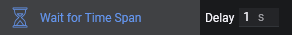
Wait for a specific period of time.
Wait If Moon Altitude#
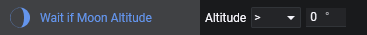
Waits for as long as the moon matches the specified parameters.
Wait If Sun Altitude#
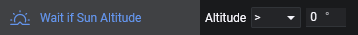
Waits for as long as the sun matches the specified parameters.
Wait Until Above Horizon#
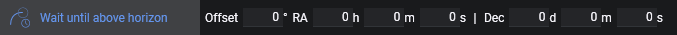
This will wait for as long as the specified target is below the horizon. When a custom horizon is set, the custom horizon will be considered as the altitude to be above of. When no custom horizon is set, 0° of altitude will be considered. Furthermore an altitude offset can be specified.
When this instruction is part of a "Deep Sky Object Sequence" the coordinates will be inherited and no coordinates need to be entered here